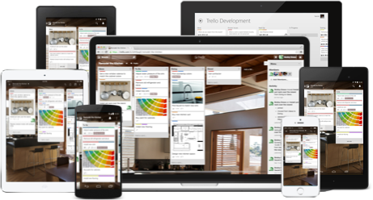

It's high time you stopped digging through emails and Slack
to find that message from your housemate. Communicate, upload files,
add due dates, and plot to #DominateAllTheHouses, all within a
Bofrello board.
This is a Bofrello board. It's a list of lists filled with cards,
used by your house or by yourself.
Drag and drop cards between lists to show progress. Add as many
people as you need and drag them to cards. Add and reorder lists
as you need. Bofrello adapts to your project, house, and
workflow.
You’ll see everything about your project just by glancing at the
board, and it all updates in real-time. There’s nothing to set
up and everyone gets it instantly.
Bofrello will never overwhelm you with features you won’t use. For
those who want more out of their boards, there are Power-Ups like
calendar, card aging, and voting, that you can turn on. It’s a way
to offer more without cluttering things for everyone.

Bofrello stays perfectly in sync across all your devices,
wherever you are. There are fast and intuitive apps for
the web, Android phones and tablets, iPhone and iPad and
Kindle Fire.